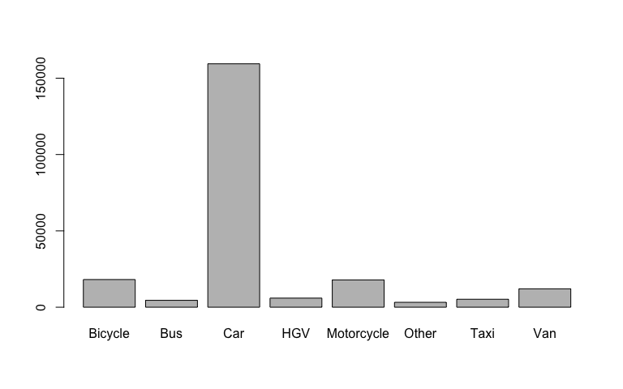
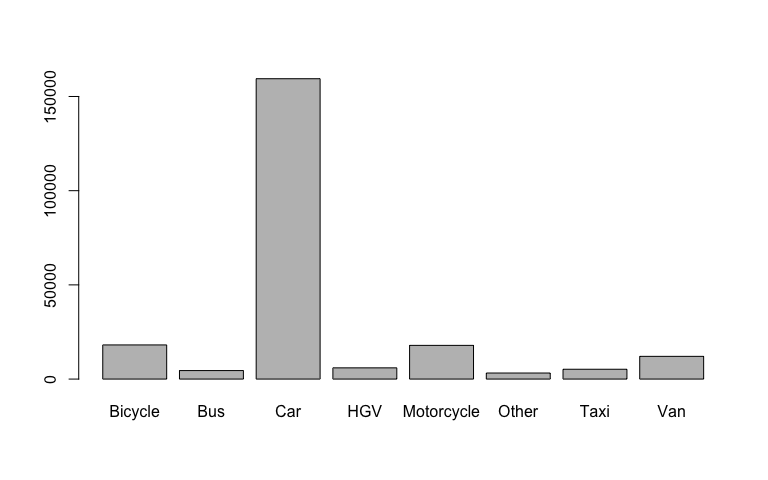

Get traffic calming data
traffic_calming_points = tc_get_osm(bbox = "chapeltown leeds")
mapview::mapview(traffic_calming_points["traffic_calming"])

Recoding data
Recode vehicle types:
tc_recode_vehicle_type(c("Bus long", "Motorcycle long name")) #> [1] "Bus" "Motorcycle"
This can be useful in visualisation:
v = stats19::get_stats19(year = 2018, type = "vehicles") #> Files identified: dftRoadSafetyData_Vehicles_2018.csv #> http://data.dft.gov.uk.s3.amazonaws.com/road-accidents-safety-data/dftRoadSafetyData_Vehicles_2018.csv #> Attempt downloading from: #> Data saved at /var/folders/z7/l4z5fwqs2ksfv22ghh2n9smh0000gp/T//RtmpFerJDz/dftRoadSafetyData_Vehicles_2018.csv v$vehicle_type_simple = tc_recode_vehicle_type(v$vehicle_type) barplot(table(v$vehicle_type)) barplot(table(v$vehicle_type_simple))
 

Note that the second plot on the right is much easier to interpret. See ?tc_recode() for details.
Development (contributing)
R package testthat is used to test this package. Some of the tests, understandably, need to make calls to OSM and other remote services. The package has an ENV to avoid running network calls (downloads). If you like to avoid running them set an ENV var with DONT_DOWNLOAD_ANYTHING = false so that you skip them. If curl::has_internet() fails, they will be skipped anyways.